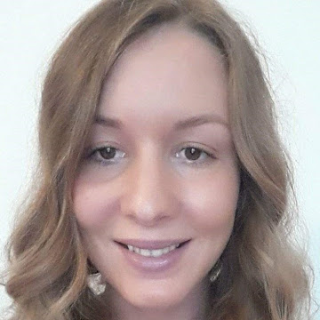

About me, Martina

Summary
I am Martina, 33 years young, and my desire is to change careers and live my life the way I want—peacefully and freely.
I was born and raised in Croatia, Europe. I studied Physiotherapy and eventually moved to Germany to work in the healthcare sector.
After many years, I found myself unhappy and wanting to completely change my life.
Education
- Fachkraft für Digitalisierung, The Key Academy, Germany
- Bacc. Physiotherapy, Rijeka, Croatia
- High Scholl, Buje, Croatia
- Elermentary Scholl, Umag, Croatia
Work experience
- Ulrich Schneider-Therapy Management Services
- Physio Akut
- Physiopraxis in Rüdern
Skills
- Atention to Detail
- Critical Thinking
- Projekt Managment
- Marketing and Branding
- Time Management
- Problem Sollving
- Communication
Contact me